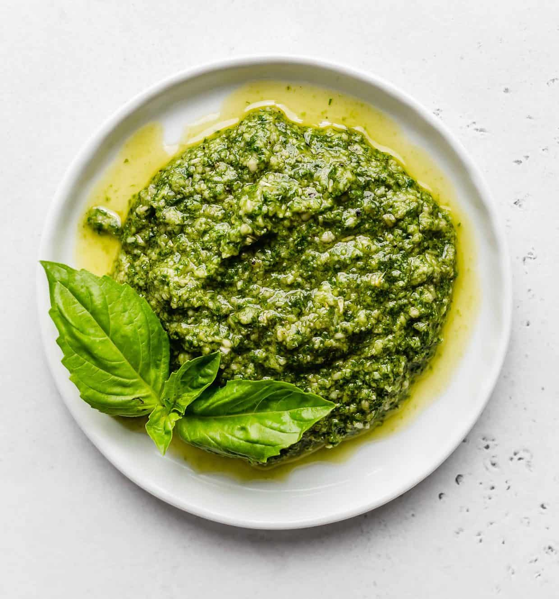

Basic Pesto

Description
Pesto is an Italian sauce traditionally consisting of crushed
garlic, European pine nuts, coarse salt, basil leaves, and hard
cheese such as Parmigiano-Reggiano, all blended with olive oil.
Ingredients
- 2 C fresh basil leaves (no stems)
- 2 tbs pine nuts
- 2 large garlic cloves
- 1/2 C extra virgin olive oil
- 1/2 C freshly grated parmesan
Steps
- Combine basil leaves, pine nuts, and garlic in food processor
and process until very finely minced.
- With the machine running slowly drizzle in the olive oil and
process until the mixture is smooth.
- Add the cheese and process very briefly, just long enough to
combine. Store in refridgerator or freezer.